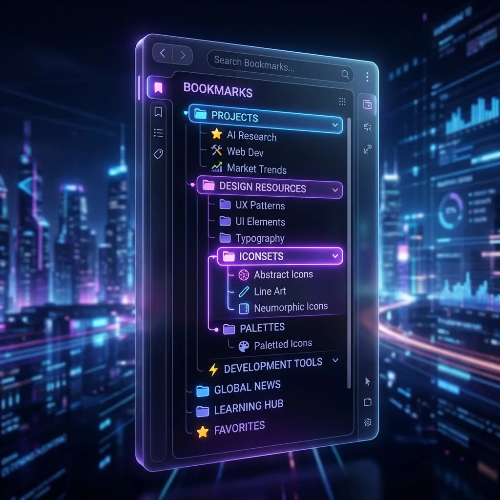

LB TAB Layers はインストール後、ツールバーのアイコンか Alt+T でサイドパネルを開いて使います。最初にやることは①右の列（タブ・ブックマーク・メモなどの画面と、整理・スクショなどの道具）を知る、②「＋」でグループを1つ作る、③開いているタブをドラッグしてグループに保存する、の3つです。保存したタブはChromeのブックマークに同期されるので、拡張を消してもデータは残ります。
LB TAB Layers をインストールしていただき、ありがとうございます。
多機能な拡張機能ですが、最初に覚えることは3つだけです。この記事では、インストール後の5分で済ませておきたいことを順番に紹介します。
💡 はじめて開くと、「どんなときに使いたいですか？」と聞く、はじめ方の画面が出ます。画面の各部を順に案内する7ステップのガイドは、ヘルプの「ガイドを再生」からいつでも見られます。
ステップ1：開き方を覚える
LB TAB Layers は、Chromeの右側に表示されるサイドパネルで使います。開き方は2通りです。
- ツールバーの LB TAB Layers アイコンをクリック（見当たらないときは、パズルのアイコンからピン留め）
- キーボードの Alt+T（Macは Option+T）

ショートカットの変更方法は「Chrome拡張機能のショートカットキーを設定・変更する方法」で紹介しています。
ステップ2：右の列の使い方を知る
サイドパネルの右の縦の列で、画面を切り替えて使います。上の5つが「画面」、区切りの下が「道具」です。
| ボタン | できること |
|---|---|
| タブ | 開いていて、まだグループに入れていないタブ（単独タブ）の一覧 |
| ブックマーク | グループ（フォルダ）を作ってタブを保存・一括オープン。いちばんよく使う画面 |
| 履歴 | この1週間に見たページ（PRO版・トライアル中） |
| メモ | メモとチェックリスト |
| ステップ | 仕事を工程に分けて進めるステップタスク |
| 整理 | ブックマークの重複とリンク切れをまとめて掃除 |
| スクショ | グループ内のページを一括で撮影して、ZIPやPowerPointに保存 |
| 修正 | 動画や Web ページに、番号つきの修正指示を書く |
| AI | 見ているページを添付して要約や質問。Chrome内蔵AIならAPIキー不要 |
| DB | 大画面のダッシュボード。サムネイル付きのライブラリ表示で一覧・整理 |
最初は「タブ」と「ブックマーク」だけ使えれば十分です。ほかの画面や道具は、必要になったときに試してみてください。
ステップ3：最初のグループを作る
「＋」でグループを作成
「ブックマーク」の画面の「＋ 新しいグループ」から、グループ（フォルダ）を1つ作ります。「今週の仕事」「A社」「調べもの」など、何でもかまいません。
タブをドラッグ＆ドロップ
いま開いているタブの一覧から、残したいタブをグループへドラッグします（タブとブックマークが別の画面のときは、タブの行の「フォルダに保存」のボタンから）。この瞬間にChromeのブックマークとして保存されます。
安心してタブを閉じる
保存したタブは閉じても消えません。次に使うときはグループの ▶ でまとめて開けます。
グループの構成を一から考えるのが面倒なら、ようこそ画面（「どんなときに使いたいですか？」）で使いたい場面を選ぶと、合ったグループとメモができます（あとからでも、設定の「データ」→「はじめる・乗り換える」の「はじめ方を選びなおす」で選べます）。ようこそ画面の下の「プリセットから始める」や、右クリックの「フォルダプリセット」も使えます（→「プリセットの使い方」）。
ステップ4：好みに合わせて設定する（任意）
ここからはお好みで。よく変更される設定を3つ紹介します。
- テーマ — 設定の「見た目」→「テーマ」で、全40種類から見た目を選べます（無料版は3種類。ほかは PRO）（→「テーマを変更する方法」）
- 起動時の表示 — Chrome起動時にサイドバーを「チラ見せ」または「常に開く」（→「起動時にサイドバーを自動で開く方法」）
- サムネイルプレビュー — ダッシュボードでページの見た目から探せるようにする（→「ライブラリ表示」）
データはどこに保存される？
LB TAB Layers のグループと保存タブは、Chromeのブックマークフォルダと同期しています。
- PCを再起動しても消えない
- Chromeが落ちても消えない
- 拡張機能を削除しても、ブックマークとして残る
「タブ管理ツールを試したら、やめたときにデータが全部消えた」という心配がないのが、LB TAB Layers の一番の特長です。
困ったときは
サイドパネルのヘルプに、操作ガイドと「ガイドを再生」ボタンがあります。7ステップのガイドは、右の列 → グループ作成 → タブ一覧 → 整理 → スクショ → AI → ヘルプの順に案内します。
よくある質問
Q. LB TAB Layersはどうやって開きますか？
ツールバーのLB TAB Layersアイコンをクリックするか、キーボードのAlt+T（MacはOption+T）でサイドパネルを開きます。アイコンが見当たらない場合は、Chromeのパズルアイコンからピン留めしてください。
Q. 最初のガイドをスキップしてしまいました。もう一度見られますか？
はい。サイドパネルのヘルプにある「ガイドを再生」から、7ステップのガイドをいつでも再生できます。
Q. LB TAB Layersを削除したら、保存したタブは消えますか？
消えません。グループと保存タブはChromeのブックマークフォルダと同期しているため、拡張機能を削除してもブックマークとして残ります。
▶ 実際の操作を動画で見る
サイドバーで、ブックマークとタブをいっしょに管理する様子です。